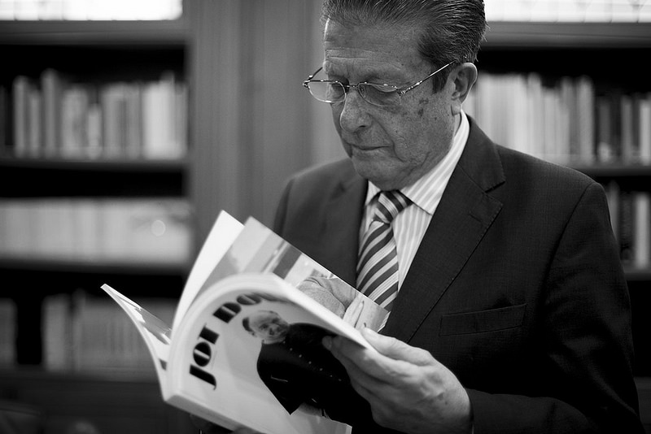

La Cultura de Paz de Federico Mayor Zaragoza: un legado para la construcción de un mundo más pacífico
El libro "La Cultura de Paz" de Federico Mayor Zaragoza es un importante aporte al debate sobre la construcción de un mundo más pacífico. El autor, un reconocido científico y diplomático español, ofrece un análisis claro y conciso de las causas de la violencia y la guerra, y propone una serie de acciones concretas para la construcción de una cultura de paz. El libro se divide en cuatro partes. En la primera parte, el autor define la cultura de paz como "el conjunto de valores, actitudes y comportamientos que reflejan respeto a la vida, respeto a la igual dignidad de todos los seres humanos, respeto a los derechos humanos, rechazo a la violencia y a la discriminación, y compromiso con la construcción de un mundo más justo y equitativo". En la segunda parte, Mayor Zaragoza analiza las causas de la violencia y la guerra. Sostiene que estas son el resultado de una serie de factores, como la pobreza, la desigualdad, la exclusión, la injusticia y la falta de educación. En la tercera parte, el autor presenta los principios y valores de una cultura de paz. Estos son el respeto a la vida, la igualdad, la justicia, la solidaridad, la tolerancia, el diálogo y la negociación. En la cuarta parte, Mayor Zaragoza propone una serie de acciones para la construcción de una cultura de paz. Estas acciones se centran en la educación, la cultura, la economía, la política y la sociedad civil. El libro "La Cultura de Paz" es un importante legado para la construcción de un mundo más pacífico. El autor ofrece una visión clara y esperanzadora de un futuro en el que la violencia y la guerra sean sustituidas por la paz, la tolerancia y la solidaridad.
Importancia
"El libro 'La Cultura de Paz' destaca como una obra esencial en el amplio y necesario diálogo sobre la construcción de un mundo caracterizado por la paz y la convivencia armónica. El autor brinda un análisis minucioso y accesible que arroja luz sobre las causas subyacentes de la violencia y los conflictos armados, al tiempo que presenta una serie de acciones concretas y efectivas para fomentar una cultura de paz. Este libro no solo resulta relevante, sino imprescindible para todos aquellos que comparten el compromiso de edificar un mundo más pacífico y justo. Su contenido ofrece una visión clara y alentadora de un futuro en el cual la violencia y la guerra dejan espacio para la paz, la tolerancia y la solidaridad. En su esfuerzo por promover una cultura de paz, el libro identifica y detalla una variedad de acciones que abarcan desde la esfera educativa hasta la cultural, económica, política y la participación de la sociedad civil. Proporciona una guía sólida y completa, brindando un enfoque multidimensional para transformar nuestra sociedad en un entorno donde la paz sea el fundamento de la convivencia global."
Algunos de los principales puntos del libro:
- La cultura de paz es un proceso de transformación social que requiere el compromiso de todos los ciudadanos.
- La violencia y la guerra son el resultado de una cultura que promueve la imposición y la desigualdad.
- Una cultura de paz se basa en el respeto a la vida y a la dignidad de todos los seres humanos.
- Los principios y valores de una cultura de paz son el respeto a la vida, la igualdad, la justicia, la solidaridad, la tolerancia, el diálogo y la negociación.
- La educación es un pilar fundamental para la construcción de una cultura de paz.